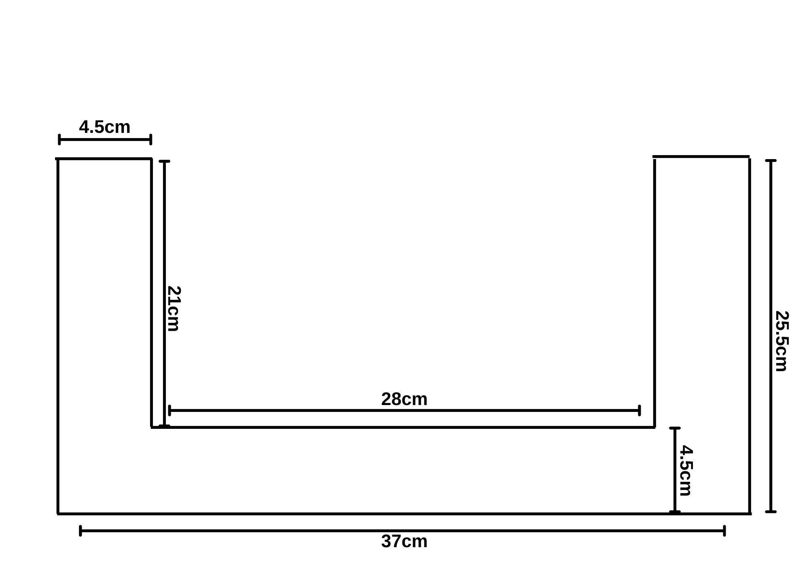

Touchless User Interface
Having dove into this project with some rather light research, I had discovered that currently the only means of achieving a touchless user interface have been by employing either a voice command system or a gesture controlled system. Don't get me wrong, these two solutions for the problem are truly innovative and appreciated, but could we do better?
So now imagine a world where we could operate our devices without the need for direct physical contact, voice commands, or gestures. By exploring my imagination and technological knowledge, I devised a design involving Infrared Sensors to detect interferences and relay computational input to a device.
The Infrared Sensor
The infrared sensor is an electronic module that can emit infrared light and detect the reflected light once an object obstructs the ray. In itself, the infrared wave is a band in the electromagnetic radiation spectrum having a wavelength between 780 nm and 1 mm, making it invisible to the human eye.
Infrared radiation is also termed thermal radiation, which can be produced by any hot object, and so many types of IR sensors omit the IR emitter and
rely solely on the IR photodiode responsible for detecting changes in IR radiation in an environment (AKA changes in an
environments temperature).
An example is the passive infrared sensor( PIR ), which detects motion by changes in the infrared radiation in an environment.
HW201 IR Sensor Module
Using this module I would have a max range of 30cm, which could be adjusted with a potentiometer, which would vary the resistance at the non-inverted end of the comparator chip. However, for the final design, a fixed SMD resistor would be the best fit.
The major components include:
IR LED
IR Photodiode
LM393 Comparator
The module emits an IR light from the IR LED. Once the light is reflected, the IR photodiode senses it, and its resistance drops.
The drop in resistance allows more voltage to flow through the non-inverted end of the Comparator chip, which compares it with the
inverted end of the comparator chip.
If the voltage at the non-inverted end is higher, then a HIGH output voltage passes through,
but if it's lower then a LOW output voltage gets passed out. The drop in resistance of the photodiode relies on the intensity of
the reflected IR light, which reduces the further away the interfering object is.
Dimensions
IR LED: 0.5cm
IR Photodiode: 0.45cm
Space Between IR LED and Photodiode: 0.2cm
Width of module: 1.4cm
Height of module: 4.1cm
The Touchless IR Interface
My design for this device consists of an organized grid of IR sensors to provide more detailed data on detected interferences and then interpret those interferences to control the intended device, like a computer mouse.
Dimensions

In the 28cm by 21cm interior of the frame, a maximum of 20 IR sensor modules can be fit side by side on the
horizontal axis.
The first sensor's IR LED would be separated from the wall of the frame by a distance of 0.2cm, and the last
sensor's IR photodiode would have a distance of 0.2cm from the frame.
As the modules are laid side by side, there would be a distance of 0.4cm between the photodiode of the first
module and the IR LED of the following module.
Along the vertical axis, 15 IR sensors would be able to fit in the same orientation as on the horizontal axis.
Data Analysis
.png)
.png)
Depending on the position and delay of an interference, various movements can be interpreted to control a device. On the horizontal axis, there would be a second column just behind the first. The idea behind this design is that once an interference is detected in the second column, the position is determined from the initial grid, and the act of breaching the second column would be registered as either a selection, single press, or double press, depending on the delay.
As a detectable object moves through the initial grid, its movement would be interpreted similarly to how a computer mouse moves.